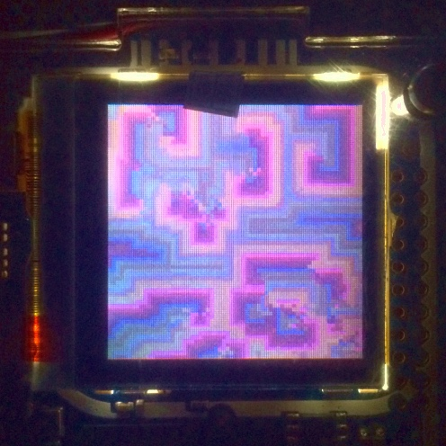

I was one of the lucky ones that got hold of an amazing rad1o on the last Chaos Communication Camp, but, apart from following some SDR tutorials and messing around with transmitting and recieving FM signals, I couldn't invest much time in doing cool stuff using it. After watching the amazing Iridium Update by sec and schneider at the 32c3, I decided to roll up my sleeves and implement something) (although not SDR related) to run on my rad1o. It'd be something neat looking yet quick to implement, that I could use to keep my badge's display busy when I was walking around on the congress. One algorithm quickly popped to my mind: the Demons of Cyclic Space.

Cyclic cycles in spaces
I first found out about this cellular automata though reading a collection of A.K. Dewdney's column "Computer Recreation" for Scientific American. The algorithm described in the article, called "A cellular universe of debris, droplets, defects, and demons", and later on his book "Computer Magic", is pretty simple:
- Populate a 2D grid with out of random n states.
- At each step t, for every position p on the grid, check if any neighboring position (up, down, left, right) has the successor state n + 1. The successiong of states is cyclic, so the successor of the state n is the state 0.
- If yes, the state of p on step t + 1 becomes it's successor.
Writing a l0dable
The rad1o f1rmware provides an easy way to write small interactive applications that can use the built-in joystick and display things on
the tiny Nokia 6100 screen -- the l0dables. Those are C programs that get dynamically loaded by the f1rmware through a navigable menu.
Their entry point is the void ram(void) function, that, for all effects, acts like the main method. The l0dable standard library is forked
from the one developed for the r0cket, and provides a clear API for basic build blocks like handling the display
(initializing, drawing and closing), getting events from the joystick (4 directions + press), rendering fonts, etc.
I couldn't find any text documentation, but the source code is
available on github
and is a breeze to understand if you have some knowledge of C.
Deploying a l0dable on your rad1o is as simple as including the name of your .c file to the C1D array on the firmware Makefile, compiling and flashing again.
Instructions on the dependencies and how to compile and flash the f1rmware can be found in the rad1o wiki.
Notice that the name displayed on the menu will be the name of the .c1d file.
dem0ns
The implementation of the algorithm is pretty straightforward, but there are still some learnings worth highlighting:
-
memory size: the automata needs two buffers to run, in order to keep the state at t and t + 1. As a rookie in microcontroller programming, I allocated two
uint8_tbuffers with the size of the screen 130x130 straight away. As it happens, the rad1o wouldn't even have memory one of such buffers. The solution involved using the video memory directly as the one of the buffers, and using a grain size of at least 2 pixels -- meaning 2x2 blocks, or a buffer size of at most 65x65. -
color palette: in order to display the the automata on the screen, it's necessary to have a mapping between colors and state. To keep things simple, I used a linear mapping to the 8-bit (RRRGGGBB) color representation used on the device, ignoring the color component information. Surprisingly, this method yielded some pleasant colorschemes that I'd probably otherwise not think of myself. An important part of this step is ensuring that the range of possible colors is a multiple of the numer of states, so that the modular arithmetic works fine and the states cycle correctly.
The code for the l0dable is available on my fork of the f1rmware